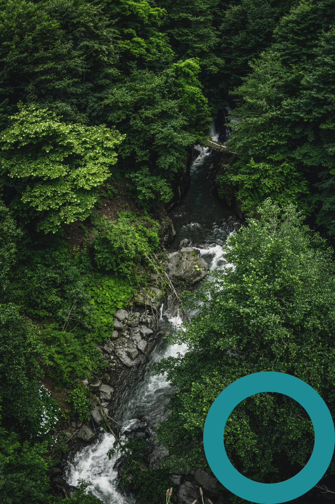
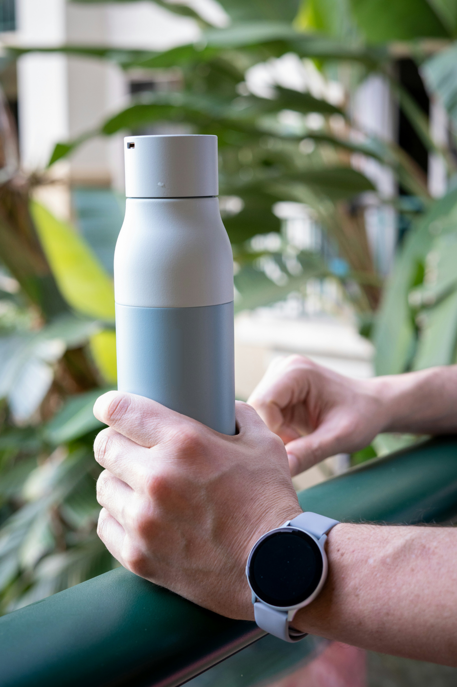
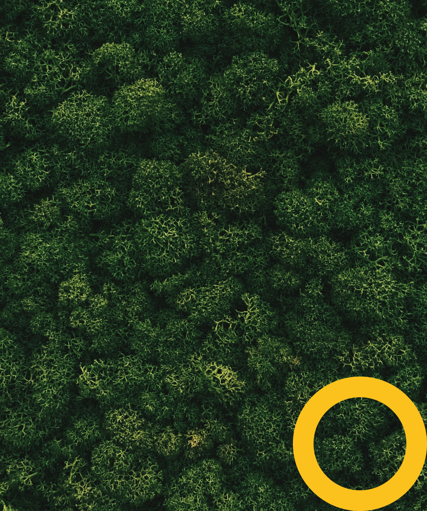
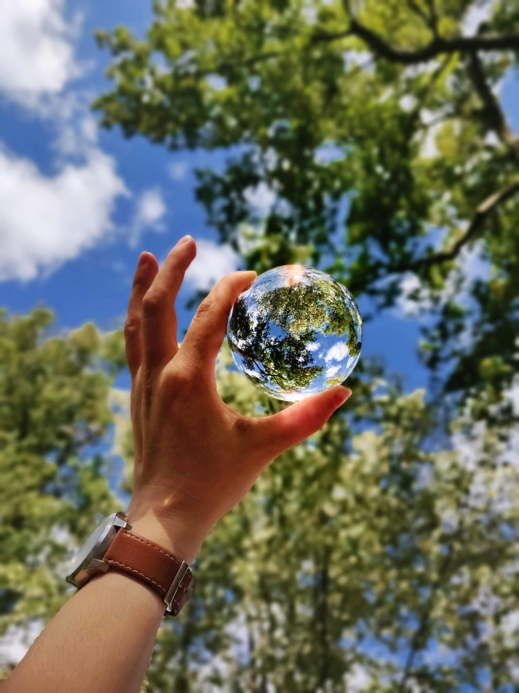

Забота о планете начинается с тебя!
ЭКОПРИВЫЧКИ
—ЭТО
ПРОСТО!


Что такое экопривычки?
Экопривычки — это простые и доступные действия: использование многоразовых сумок, сортировка отходов, экономия воды и энергии и многое другое. Каждый человек может внедрить их в свою повседневную жизнь, чтобы уменьшить негативное воздействие на окружающую среду.
Каждый день
— это шанс сделать мир лучше.
Маленькие шаги к большому будущему
Экопривычки помогают не только сохранить окружающую среду, но и улучшить качество жизни.
Почему экопривычки — это важно?
Действия каждого человека влияют на состояние планеты. В наших силах уменьшить загрязнение, сохранить природные богатства и улучшить качество жизни для всех живых существ. Экопривычки - это не просто тренд, а необходимые условия для счастливого будущего. Чем больше людей выберут экологичный образ жизни сегодня, тем лучше будет чувствовать себя наша планета!
Экопривычки, которые может соблюдать каждый:

1
СОКРАТИТЕ КОЛИЧЕСТВО ПОТРЕБЛЯЕМОЙ ЭНЕРГИИ
Не забывайте выключать свет, когда покидаете комнату. Замените лампочки на светодиодные. Отключайте электроприборы, если не пользуетесь ими.
2
Бережно относитесь к водным ресурсам
Не забывайте выключать воду, когда покидайте ванную комнату или чистите зубы. Следите за исправностью приборов и не допускайте случайно утечки воды. Старайтесь меньше принимать ванну и больше принимать душ.
3
Уменьшите использование бумаги
Примерно 40% древесины, вырубаемой в коммерческих целях, отправляется на производство бумаги. Собирайте макулатуру и сдавайте использованную бумагу на переработку. Откажитесь от бумажных чеков в пользу электронных. Сократите использование бумажных полотенец.
4
СОКРАЩАЙТЕ ПРОИЗВОДИМЫЕ ОТХОДЫ
Сократите использование одноразовой посуды. Ходите в магазины с тканевыми сумками. Выбирайте товары в перерабатываемой упаковке. Сдавайте пластиковые крышечки и бутылки в специальные пункты приема.
5
Покупайте только нужные продукты и вещи
Прежде чем идти в магазин, составьте список необходимых покупок. Это оградит от импульсивных трат и поможет выбрать то, что действительно нужно. Это позволит снизить расход природных ресурсов и придти к разумному потреблению
6
ВЫБИРАЙТЕ ЭКОЛОГИЧНЫЕ ВИДЫ ТРАНСПОРТА
Чаще катайтесь на велосипеде или ходите пешком. Когда есть возможность, пользуйтесь общественным транспортом, а не личным автомобилем.


Как вводить экопривычки?
Не пытайтесь следовать всем советам сразу. Выберите из перечня экологичных привычек одну или две, которые больше всего заинтересовали или вдохновили вас. Попробуйте внедрить их на несколько дней или недель, чтобы постепенно привыкнуть к новому образу жизни.
Экопривычки
c детства!
Настольная игра "Экопуть" поможет вашим детям привить важные экологические привычки с раннего возраста.